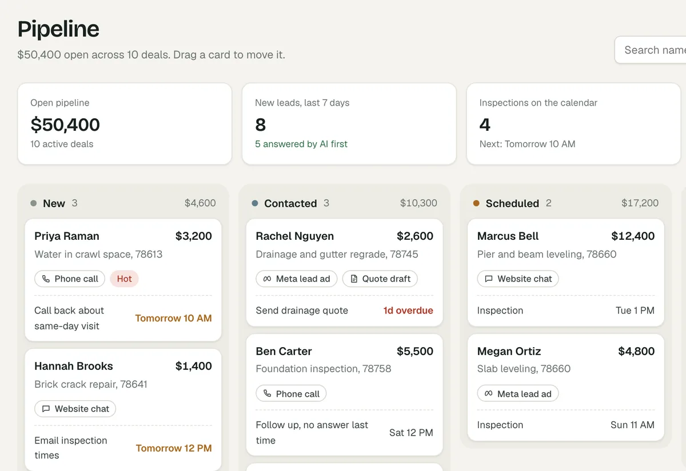
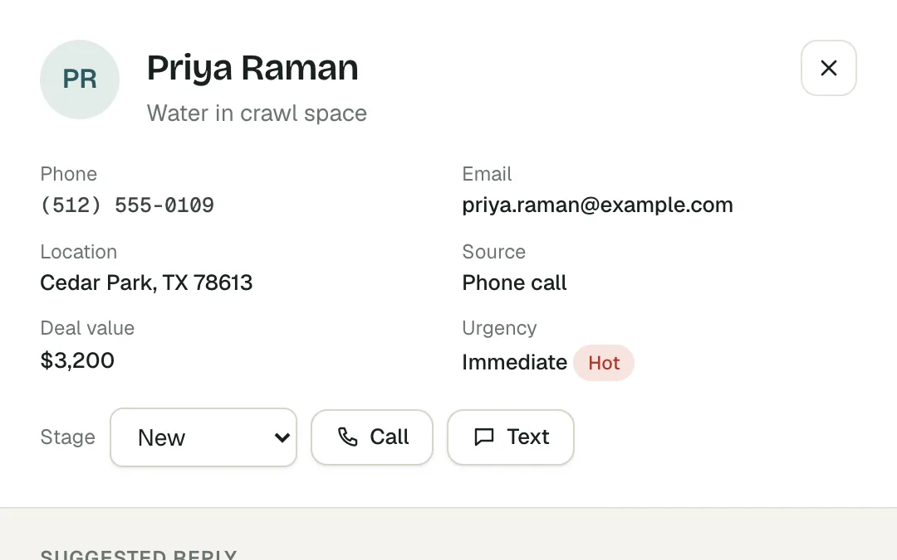
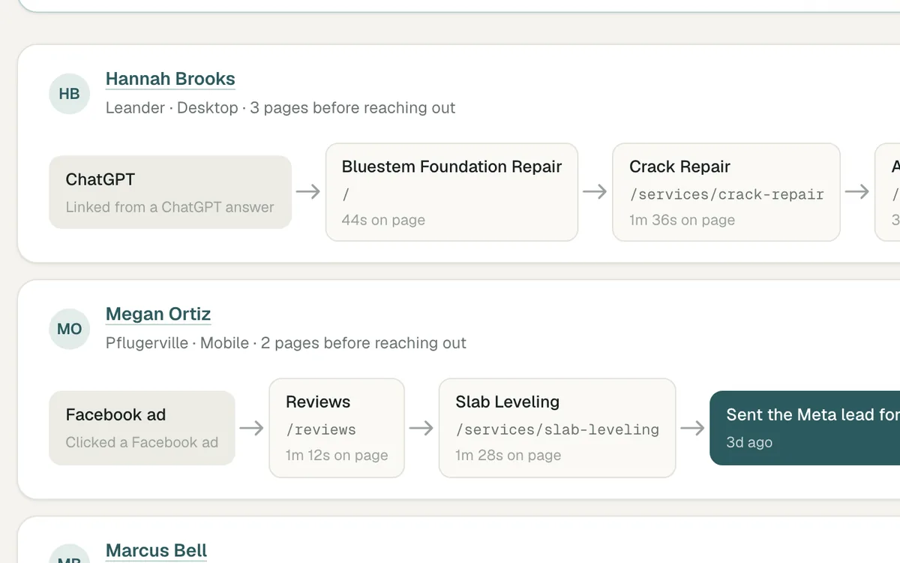
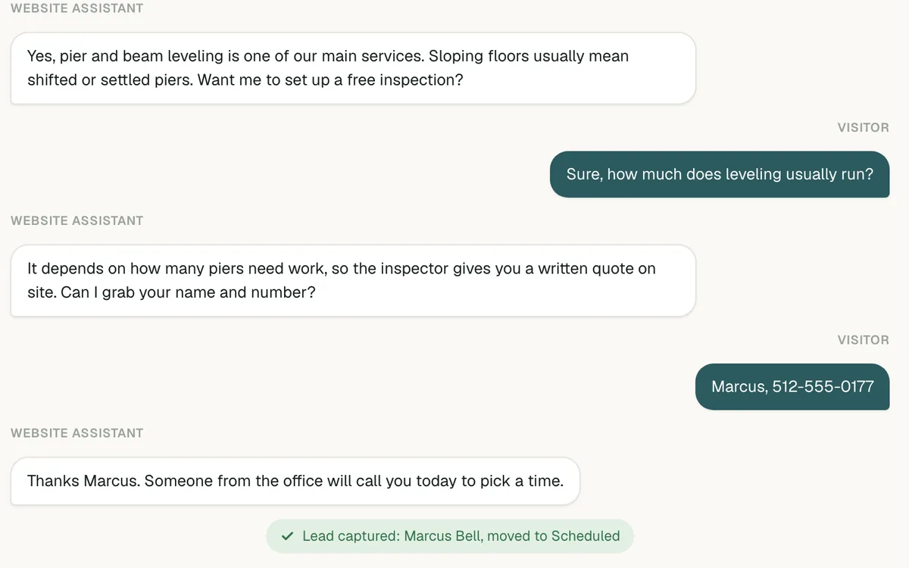
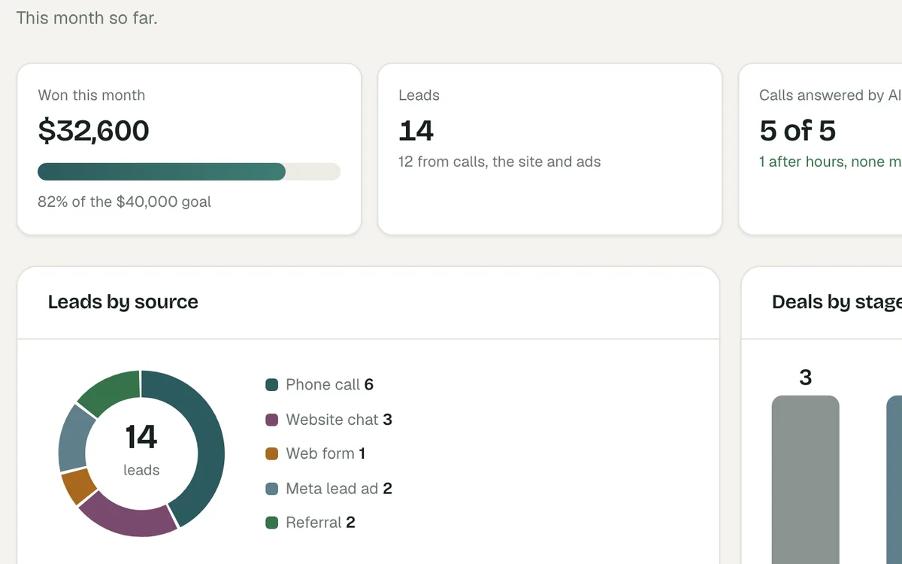

A2H · Walkthrough
Every call and chat answered. Every lead in one place.
What A2H builds for a service business: a website that turns visitors into calls, a voice AI and website chat that answer at any hour, and a CRM where every lead lands. Everything below is clickable.
01 · Voice AI
Hear it take a call, start to finish.
A recorded demo call to a test business, Bluebonnet Mobile Grooming (fictional). The AI is named Riley. Press play, or click any part to jump to it.
Riley picks up in under a second, says the business name, and asks the caller what they need.
Read the transcript
Riley (AI) Hey. Bluebonnet Mobile Grooming. This is Riley. How can I help you?
Caller Hey. Yeah. I was wondering if you have any openings this week. My dog is way overdue for a groom.
Riley (AI) Yeah. We see a lot of those. Don't worry. You're not alone. Uh, what's your pup's name, and what kind of dog is he?
Gives a starting price for a dog her size, from the business's own price list, and mentions an add-on once without pushing it.
Read the transcript
Caller Her name's Bella. She's a goldendoodle about fifty pounds. How much is a full groom?
Riley (AI) Goldendoodle named Bella Nice. For a full groom on a dog her size, it starts at ninety five bucks.
Caller Yeah.
Riley (AI) the groomer will confirm the final price with the van. Just depends on on her coat and all that. Um, does Bella shed a lot or have a pretty thick coat? If so, there's a deshedding add on we can do for twenty more. What do you think?
Caller She's got a pretty thick coat, but she doesn't really shed much. I think just the regular groom is fine.
Asks about nerves, matting and coat so the groomer arrives prepared. The caller mentions the dryer, matting and nerves around men.
Read the transcript
Riley (AI) Alright. Regular full groom for Bella. Got it. Um, anything the the groomer should know about her? Like, is she nervous? has any matting, any skin stuff, hates dryers, anything like that.
Caller Yeah. She actually hates the dryer, and she's got some matting behind her ears. She's also kinda nervous around men. Oh, wait. Am I talking to a real person?
The caller asks whether she is talking to a real person. Riley says it is an AI, offers a callback from a human, and carries on when the caller says to.
Read the transcript
Riley (AI) Yeah. I'm an AI. I I help with the phones while the groomer's working. If you'd rather talk to a real person, I'll have them call you back. Totally fine. or I can finish getting you booked. Your call. No hard feelings either way.
Caller No. That's fine. You can keep going. That's everything with Bella.
Repeats back what it heard, then asks where the van should go.
Read the transcript
Riley (AI) Alright. Thanks for letting me know. So I've got hates the dryer, matting behind her ears, and she's kinda nervous around men. That cover it. Um, and what address should the van come to?
Caller Sure. Yeah.
Riley (AI) Cool. Whenever you're ready, go ahead and tell me the address.
Caller Yeah. Yeah. That's it. The address is fourteen twenty seven Pecan Hollow Drive.
Looks up open times, offers three, and books the caller's pick. Riley interrupts itself at one point, the way a person would.
Read the transcript
Riley (AI) Alright. We come out that way. Let me take a peek at openings for this week.
Riley (AI) Alright. Thanks. We come out that way.
Caller Great. Thanks.
Riley (AI) So I've got Monday
Caller Oh,
Riley (AI) Oops, jumped in too quick there. Monday is wide open, ten, two, or four. Any of those work for you?
Caller I'll take the ten o'clock spot. Earliest is best.
Riley (AI) Ten it is. And who am I putting this under?
Caller Chris Walker.
Reads back the booking, notes that the caller wants a groom every six weeks, and ends the call on its own.
Read the transcript
Riley (AI) Alright. You and Bella are all set for Monday at ten since it's her first visit. Just bring proof of rabies for the groomer. Most doodles do best every four to six weeks. Want me to note that for the groomer or
Caller Every six weeks
Riley (AI) Cool. I'll note every six weeks for Bella.
Caller Yeah. Go ahead and note it.
Riley (AI) Already got it down for you. So
Caller Perfect.
This is a demo. For your business it uses your name, services, prices, service area and hours, and hands off to you whenever a caller asks for a person.
02 · The CRM
Every call, chat and form lands here.
This is the real CRM with sample data for a fictional foundation repair company. Click any screen to open that part of the live demo. No login.






Running for a client
A real client's website chat feeding their CRM
H&A Healthcare Consulting, an A2H client. The chat on their live site answers a question, takes the visitor's details, and the lead appears in their CRM. Recorded with a test conversation.
03 · Live work
Sites we built. Open them yourself.
Each one opens the real, live site in a new tab. Try them on your phone too.


04 · What we build for you
Built in stages, so you see each part working before you rely on it.
Week 1–2
Website
Live for clients today- Fast on a phone, with your number tap-to-call at the top
- Service and service-area pages written for local search
- Quote form with spam protection, and tracking for Google and Meta ads
- A free sample homepage first, so you see it before you pay
$800 to $2,000 one time, depending on pages and features
See live sites ↓Week 2
CRM and website chat
Live for clients today- Your own CRM workspace: pipeline, contacts, tasks, reports
- Website chat trained on your services, prices and service area
- Every chat and form becomes a lead, and you get an alert
- Shows which pages a lead read and where they came from
Week 3–4
Voice AI on your phone line
Pilot setup- Answers missed and after-hours calls in your business name
- Quotes from your price list, takes the job details and address
- Always says it is an AI and offers a callback from you
- Logs every call with a summary and transcript in the CRM
- We connect your number and calendar, then run test calls with you before it takes real ones
Monthly
Upkeep
- Hosting, updates and fixes
- Tuning the chat and voice AI from real conversations
- A monthly report: leads by source, calls answered, deals won
05 · Next steps
A few questions, then a free sample.
How many calls a week go to voicemail or come in after hours?
Where do leads come from today: Google, referrals, ads, a listing site?
Where do you keep leads now, and who calls them back?
What does a typical job pay, and what makes a lead a good one?
Which part do you want first: the website, the CRM and chat, or the phone?